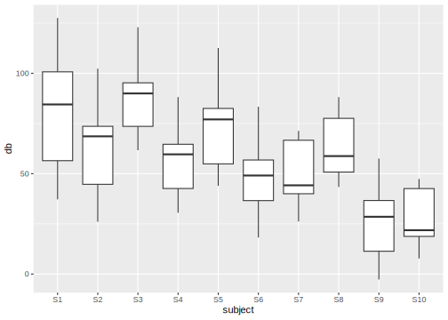

5 Gemischte Lineare Regression
5.1 Packages und Daten laden
Laden Sie die Pakete und Data Frames:
## Loading required package: lme4## Loading required package: Matrix##
## Attaching package: 'Matrix'## The following objects are masked from 'package:tidyr':
##
## expand, pack, unpack##
## Attaching package: 'lmerTest'## The following object is masked from 'package:lme4':
##
## lmer## The following object is masked from 'package:stats':
##
## step## Registered S3 methods overwritten by 'MuMIn':
## method from
## nobs.multinom broom
## nobs.fitdistr broom5.2 Mixed Models (LMERs): Einführung
Mit einem Linear Mixed Effect Model (auch: Linear Mixed Effect Regression oder LMER) wird geprüft, ob eine gemessene abhängige Variable von einer oder mehreren unabhängigen Variablen beeinflusst wird. Diese Art von Modellen wird als “gemischt” (mixed) bezeichnet, weil sowohl Variablen, deren Einfluss auf die abhängige Variable für die Forschenden interessant ist (Fixed Effects), als auch Variablen, deren Einfluss uninteressant ist (Random Effects), Teil des Modells sein können. Die Fixed Effects in einem Mixed Model können sowohl kategorial als auch kontinuierlich sein, die Random Effects ausschließlich kategorial.
Damit erweitern wir die einfache und multiple lineare Regression, die nur Fixed Effects als Prädiktoren genutzt haben. In der Phonetik und Linguistik werden häufig die StudienteilnehmerInnen und Items oder Wörter als Random Effects im LMER verwendet. Das liegt daran, dass wir eine zufällige Auswahl an Probanden und/oder Wörtern einer bestimmten Sprache auswählen und hoffen, dass sich die Ergebnisse auf andere Probanden und/oder Wörter derselben Sprache übertragen lassen. Dieser zufällige Auswahlprozess hat zur Folge, dass wir noise in unser Experiment bringen, das wir dann mittels LMER wieder “herausrechnen” können. Während wir also für Fixed Effects einen vorhersagbaren Einfluss auf die abhängige Variable vermuten, ist der Einfluss der Random Effects nicht vorhersagbar, d.h. random.
Schauen wir uns den Data Frame df an, den wir bereits aus früheren Kapiteln kennen (für dieses Kapitel wurde er leicht verändert):
## # A tibble: 120 × 5
## db vowel gender subject word
## <dbl> <fct> <fct> <fct> <fct>
## 1 100 a m S1 w1
## 2 70 a m S2 w1
## 3 90 a m S3 w1
## 4 60 a m S4 w1
## 5 80 a m S5 w1
## 6 50 a f S6 w1
## 7 40 a f S7 w1
## 8 60 a f S8 w1
## 9 30 a f S9 w1
## 10 20 a f S10 w1
## # ℹ 110 more rowsHier haben wir die SprecherInnen in der Spalte subject und die produzierten Wörter in der Spalte word. Uns interessiert, ob der Vokal vowel und das Geschlecht gender einen Einfluss auf die Lautstärke db haben. Für diese Fragestellung schauen wir uns die Daten in einer Abbildung an:

Wir sehen (wie schon im vorherigen Kapitel), dass Frauen die Vokale leiser produzierten als Männer und dass /i/ etwas leiser produziert wurde als /a/. Es ist außerdem zu vermuten, dass eine Interaktion zwischen Geschlecht und Vokal vorliegt, denn der Effekt von Geschlecht ist stärker ausgeprägt für /a/ als für /i/ (bzw. umgekehrt: der Effekt von Vokal ist stärker ausgeprägt für Männer als für Frauen).
Nun wissen wir aber, dass wir mehrere ProbandInnen und verschiedene Wörter aufgenommen haben, um die Fragestellung zu untersuchen. Dabei interessiert uns nicht der genaue Einfluss der Individuen oder Wörter auf die Lautstärke, im Gegenteil: Wir wollen über die ProbandInnen und Wörter eine allgemeine Aussage ableiten, die (theoretisch) für alle möglichen ProbandInnen und Wörter gilt. Sollte es nennenswerte Lautstärke-Unterschiede zwischen den individuellen ProbandInnen und/oder den individuellen Wörtern geben, haben wir durch unsere zufällige Auswahl der ProbandInnen und Wörter noise verursacht. Mit Boxplots schauen wir, ob es nennenswerte Variationen der Dezibelwerte zwischen den Sprechern und/oder zwischen den Wörtern gibt:


Da es hier z.T. große Lautstärke-Unterschiede zwischen einzelnen SprecherInnen und zwischen einzelnen Wörtern gibt, ist es unbedingt notwendig, dass wir in dem Mixed Model, das wir für unsere Fragestellung konstruieren werden, mit Random Effects für diese beiden Variablen arbeiten.
Ein zweiter äußerst wichtiger Grund für Random Effects ist, dass wir häufig sogenannte repeated measure Experimente durchführen, bei denen z.B. mehrere Datenpunkte von demselben Probanden stammen und/oder bei denen Wörter mehrfach wiederholt wurden. Das bedeutet, dass die Datenpunkte nicht mehr unabhängig von einander sind (zum Beispiel: Datenpunkte von demselben Probanden werden häufig näher zusammenliegen als solche von unterschiedlichen Probanden). Dies ist jedoch eine wichtige Annahme in Regressionsmodellen, über die wir bislang nicht gesprochen haben. Wenn wir also überlegen, welches statistische Modell zu den Daten und unserer Fragestellung passen könnte, muss einbezogen werden, ob die Datenpunkte unabhängig voneinander sind oder nicht (in früheren Kapiteln haben wir diese Annahme aus didaktischen Gründen z.T. ignoriert). Wenn die Datenpunkte nicht als unabhängig voneinander betrachtet werden können, muss ein Mixed Model verwendet werden, da sich die Random Effects der Abhängigkeiten zwischen Datenpunkten annehmen. Ein Unterschied zwischen der Unabhängigkeitsannahme und den beiden anderen Annahmen, die Sie hier bisher kennengelernt haben, ist, dass sich die Unabhängigkeitsannahme direkt auf die gemessenen Daten bezieht, während die Normalitäts- und Varianz-Annahmen sich auf die Residuals beziehen.
Bei der einfachen und multiplen linearen Regression wird ein Intercept und dann eine Slope pro unabhängiger Variable (pro Fixed Effect) geschätzt. Bei den gemischten Modellen wird das ebenfalls gemacht, aber wir können jetzt erlauben, dass das Intercept und die Slope(s) sich für die Levels der Random Effects unterscheiden. Um die Konzepte Random Intercept und Random Slope zu erklären, konzentrieren wir uns hier erstmal auf subject als Random Effect.
5.3 Random Intercepts vs. Random Slopes
5.3.1 Random Intercepts
Sie erinnern sich, dass mittels Treatment Coding der Vokal /a/ als Null und der Vokal /i/ als Eins interpretiert wird, genauso wird das Level f (female) der Variable gender als Null und m (male) als Eins interpretiert. Die Schätzung des Lautstärke-Mittelwerts für /a/ von Frauen ist folglich in unserem Mixed Model das Intercept (genauso wie vorher in der multiplen Regression). Wir haben mittels der Boxplots oben festgestellt, dass sich die Versuchspersonen hinsichtlich der Lautstärke deutlich voneinander unterscheiden. Interessant ist jetzt für uns, ob sich Versuchspersonen desselben Geschlechts auch im Lautstärke-Mittelwert für /a/ (dem im “allgemeinen” Intercept verarbeiteten Level von vowel) unterscheiden. Denn wenn dem so ist, dann können wir mittels eines Random Intercepts für die Variable subject verlangen, dass das Intercept von Person zu Person variieren darf (deshalb spricht man manchmal auch von varying intercepts).
In der folgenden Abbildung sehen Sie die Dezibelwerte für die Vokale /a/ und /i/, getrennt nach Versuchsperson. Die Personen S1-S5 sind männlich, die Personen S6-S10 sind weiblich. Die Kreuze in orange markieren die Dezibel-Mittelwerte pro Person und Vokal. Wenn wir uns jetzt die Mittelwerte für /a/ pro Versuchsperson innerhalb derselben Zeile anschauen (das jeweils linke orange Kreuz pro Panel), gibt es große Unterschiede, z.B. zwischen S1 und S4 oder zwischen S8 und S10. Das ist ein Indikator dafür, dass es sinnvoll ist, pro SprecherIn ein Random Intercept zu berechnen.
ggplot(df) +
aes(x = vowel, y = db) +
geom_point() +
facet_wrap(~subject, nrow = 2) +
geom_point(data = df %>%
group_by(subject, vowel) %>%
summarise(db = mean(db)),
color = "orange", size = 3, stroke = 2, shape = 4) +
geom_line(data = df %>%
group_by(subject, vowel) %>%
summarise(db = mean(db)),
aes(x = vowel, y = db, group = subject),
lty = "dashed")## `summarise()` has grouped output by 'subject'. You can
## override using the `.groups` argument.
## `summarise()` has grouped output by 'subject'. You can
## override using the `.groups` argument.
In der R Notation wird ein Random Intercept so geschrieben: (1 | subject). Hierbei steht 1 für Intercept, ausgesprochen bedeutet die Formel so viel wie “schätze sprecherspezifische Intercepts”. In der Praxis berechnet ein Mixed Model mit einem solchen Random Intercept allerdings nicht ein Intercept pro Person, sondern die Standardabweichung der Versuchspersonen-Intercepts vom geschätzten “allgemeinen” Intercept über alle Datenpunkte. Das ist wichtig, weil die Berechnung des Mixed Models ewig lang dauern und wahrscheinlich Fehler werfen würde, wenn wirklich pro Versuchsperson ein Intercept geschätzt würde.
5.3.2 Random Slopes
In der obigen Abbildung sehen Sie neben den Mittelwerten für /a/ auch die für /i/ sowie eine gestrichelte Linie, die beide verbindet. Diese stellt hier sozusagen die ideale Regressionslinie pro Versuchsperson dar. Da die Linien ganz unterschiedlich steil verlaufen, können wir erahnen, dass die einzelnen Versuchspersonen unterschiedliche Slopes haben. Versuchsperson S7 macht z.B. kaum einen Lautstärke-Unterschied zwischen /a/ und /i/ (die Slope ist ca. 0), während Versuchsperson S6 das /a/ deutlich lauter produziert als das /i/ (die Slope ist negativ). Wir vergleichen die Slopes auch hier wieder nur innerhalb einer Geschlechtsgruppe, d.h. für S1-S5 und für S6-S10. Hier scheint es sinnvoll zu sein, auch sprecherspezifische Random Slopes zu berechnen, weil der Effekt des Vokals auf die Lautstärke unterschiedlich für die Versuchspersonen ist.
Allgemein wird davon ausgegangen, dass auch ein Random Intercept geschätzt werden soll, wenn wir Random Slopes schätzen. Daher ist die Formel für Random Slopes (1 + vowel | subject), also “schätze sprecherspezifische Intercepts und sprecherspezifische Slopes in Relation zum Vokal”. Häufig wird anstatt dieser Notation allerdings die Kurzform (vowel | subject) verwendet, da für die Funktion dann klar ist, dass sowohl Random Slope als auch Random Intercept berechnet werden soll. Auch hier wird wieder die Abweichung von der “allgemeinen” Slope geschätzt, und nicht wirklich eine Slope pro Proband. Wenn wirklich nur die sprecherspezifische Slope, nicht aber das varying intercept geschätzt werden soll, lautet die Formel (0 | subject).
Vielleicht fragen Sie sich jetzt, warum der Fixed Effect gender im Vergleich zu vowel hier eine irgendwie untergeordnete Rolle zu spielen scheint. Warum z.B. interessieren wir uns nicht für (1 + gender | subject) oder (1 + vowel + gender | subject)? Das liegt daran, dass die Levels der Variable gender nicht pro Versuchsperson variieren, denn die Versuchspersonen sind hier entweder männlich oder weiblich, wie die folgende Tabelle zeigt:
##
## f m
## S1 0 12
## S2 0 12
## S3 0 12
## S4 0 12
## S5 0 12
## S6 12 0
## S7 12 0
## S8 12 0
## S9 12 0
## S10 12 0Hier gibt es also gar keine Variation, die wir durch die entsprechende Random Slope herausrechnen könnten. Für die Stufen der Variable vowel hingegen liegen jeweils Werte für die Versuchspersonen vor (sie haben sowohl /a/ als auch /i/ produziert). Und das wiederum bedeutet, dass sich der Effekt von Vokal auf die Lautstärke von Versuchsperson zu Versuchsperson unterscheiden kann (der Effekt von Geschlecht auf Lautstärke hingegen kann sich nicht pro Versuchsperson unterscheiden).
##
## a i
## S1 6 6
## S2 6 6
## S3 6 6
## S4 6 6
## S5 6 6
## S6 6 6
## S7 6 6
## S8 6 6
## S9 6 6
## S10 6 65.3.3 Random Effects Struktur für word bestimmen
Da wir jetzt wissen, wie der Random Effect für subject aussieht, gehen wir dieselbe Prozedur für die Variable word durch. Dieses Mal fangen wir damit an, herauszufinden, ob pro Wort jeweils Messwerte von beiden Geschlechtern und von beiden Vokalen vorliegen:
##
## f m
## w1 10 10
## w2 10 10
## w3 10 10
## w4 10 10
## w5 10 10
## w6 10 10##
## a i
## w1 20 0
## w2 20 0
## w3 20 0
## w4 0 20
## w5 0 20
## w6 0 20Das scheint für Geschlecht, nicht aber für Vokal der Fall zu sein, d.h. der Effekt von Geschlecht auf die Lautstärke kann sich pro Wort unterscheiden. Der Effekt von Vokal auf die Lautstärke kann sich jedoch nicht von Wort zu Wort unterscheiden, weil in jedem Wort entweder /a/ oder /i/ vorkam. Die maximale Random Effects Struktur, die wir also für die Variable word erstellen könnten, ist (1 + gender | word) (sowohl Random Intercept als auch Random Slope in Relation zum Geschlecht).
Zuerst schauen wir, ob wir überhaupt ein Random Intercept für word benötigen (wobei die wortspezifischen Boxplots oben schon ein guter Hinweis darauf sind, dass wir ein Random Intercept benötigen). Wir nutzen wieder einen ähnlichen Plot wie zuvor, sodass wir pro Wort die Lautstärke-Mittelwerte für Frauen vergleichen können (f war das Level der Variable gender, das im Intercept verarbeitet wird). Natürlich könnten Sie diese Mittelwerte aber auch mittels tidyverse-Funktionen berechnen. Die Wörter in der oberen Zeile der Abbildung enthalten /a/, die in der unteren Zeile enthalten /i/.
ggplot(df) +
aes(x = gender, y = db) +
geom_point() +
facet_wrap(~word) +
geom_point(data = df %>%
group_by(word, gender) %>%
summarise(db = mean(db)),
color = "orange", size = 3, stroke = 2, shape = 4) +
geom_line(data = df %>%
group_by(word, gender) %>%
summarise(db = mean(db)),
aes(x = gender, y = db, group = word),
lty = "dashed")## `summarise()` has grouped output by 'word'. You can
## override using the `.groups` argument.
## `summarise()` has grouped output by 'word'. You can
## override using the `.groups` argument.
Der Lautstärke-Mittelwert für Frauen (jeweils das linke orange Kreuz pro Panel) unterscheidet sich für verschiedene Wörter. Wort w1 hat zum Beispiel einen deutlich niedrigeren Lautstärke-Mittelwert als w3, wenn es von Frauen produziert wurde. Auch die Mittelwerte für Frauen in Wörtern, die /i/ enthalten (w4-w6) unterscheiden sich z.T. stark voneinander. Dementsprechend ist die Berechnung eines Random Intercepts für word angebracht: (1 | word).
Interessanterweise sind die gestrichelten Linien, die die orangen Kreuze verbinden, quasi parallel für die jeweils drei Wörter pro Zeile in der Abbildung. Das heißt, der Effekt von Geschlecht auf die Wörter w1, w2 und w3 ist gleich (oder zumindest sehr ähnlich). Gleiches gilt für die Wörter w4, w5 und w6, die sich in der Steigung der gestrichelten Linie kaum unterscheiden. Innerhalb einer Vokalgruppe ist der Effekt von Geschlecht auf die verschiedenen Wörter also gleich. Das bedeutet, dass eine wortspezifische Random Slope in Relation zum Geschlecht (1 + gender | word) für diesen Datensatz nicht angebracht wäre. Es bleibt bei (1 | word) als Random Effect Struktur für die Variable word.
5.4 LMER in R
Das klassische Paket, das für LMERs benutzt wird, heißt lme4. Wir nutzen hier stattdessen lmerTest, das aber ein Wrapper für lme4 ist. Die Funktion für das Berechnen eines Mixed Models heißt lmer(). Unsere vollständige Formel enthält den üblichen ersten Teil für die Fixed Effects (inklusive Interaktion, wenn nötig), und dann die Random Effects für subject und word. Dieses Mal schauen wir uns die Ergebnisse des Mixed Models mit der Funktion summary() an. Die Funktion bekommt optional das Argument corr = F, um die Anzeige einer bestimmten Korrelationstabelle zu unterdrücken, die für uns keine Bedeutung hat.
Weiterführende Infos: LMER Ergebnisse anzeigen
Anstelle von summary() können Sie sich auch das Paket broom.mixed herunterladen, das die Funktionen tidy(), augment() und glance() für LMERs bereitstellt.
Die Funktion lmer() bekommt die Formel, die wir uns mühsam erarbeitet haben, mit der bekannten Fixed Effects Struktur db ~ gender * vowel und dann, durch Pluszeichen verbunden, die Random Effects. Zusätzlich wird der Data Frame mit dem Argument data angegeben. In diesem Fall spezifizieren wir außerdem REML = F. REML steht für Restricted Maximum Likelihood. Indem wir der Funktion das Argument REML = F gegeben haben, wird nun stattdessen eine echte Maximum Likelihood Schätzung der gewünschten Parameter ausgeführt (mehr dazu später).
df.lmer <- lmer(db ~ gender * vowel + (1 + vowel | subject) + (1 | word), data = df, REML = F)
df.lmer %>% summary(corr = F)## Linear mixed model fit by maximum likelihood .
## t-tests use Satterthwaite's method [lmerModLmerTest]
## Formula:
## db ~ gender * vowel + (1 + vowel | subject) + (1 | word)
## Data: df
##
## AIC BIC logLik -2*log(L) df.resid
## 850.7 875.8 -416.4 832.7 111
##
## Scaled residuals:
## Min 1Q Median 3Q Max
## -2.286 -0.506 0.018 0.496 2.023
##
## Random effects:
## Groups Name Variance Std.Dev. Corr
## subject (Intercept) 215.8 14.69
## voweli 110.0 10.49 -0.47
## word (Intercept) 193.1 13.90
## Residual 28.2 5.31
## Number of obs: 120, groups: subject, 10; word, 6
##
## Fixed effects:
## Estimate Std. Error df t value
## (Intercept) 48.17 10.41 12.49 4.63
## genderm 40.19 9.39 9.53 4.28
## voweli -10.01 12.35 7.93 -0.81
## genderm:voweli -20.21 6.91 9.17 -2.92
## Pr(>|t|)
## (Intercept) 0.00053 ***
## genderm 0.00180 **
## voweli 0.44140
## genderm:voweli 0.01658 *
## ---
## Signif. codes:
## 0 '***' 0.001 '**' 0.01 '*' 0.05 '.' 0.1 ' ' 1Hier wird uns zuerst angezeigt, was genau für ein Modell berechnet und welche Formel dafür verwendet wurde. Es folgt eine Aufzählung von Maßen für die model selection, nämlich AIC (Akaike information criterion), BIC (Bayesian information criterion) und logLik (logarithmierte Likelihood). Diese absoluten Werte haben keine Bedeutung; wenn sie jedoch verglichen werden mit Werten aus anderen Modellen für dieselben Daten, stehen niedrigere Werte von AIC und BIC sowie höhere Werte von logLik für eine bessere Passgenauigkeit des Modells in Bezug auf die Daten. df.resid steht für residual degrees of freedom; das ist die Anzahl der Datenpunkte minus die Anzahl der geschätzten Parameter. Der Data Frame df hat 120 Beobachtungen (Zeilen, Datenpunkte), und es wurden neun Parameter von unserem Modell geschätzt:
- für die Fixed Effects:
(Intercept),genderm,voweli,genderm:voweli - für die Random Effects:
subject (Intercept),subject voweli,word (Intercept),Residual,Corrfür die sprecherspezifische Slope in Relation zum Vokal.
Es folgen die üblichen Kennzahlen für die Residuals. Neu für uns ist die Tabelle für die Random Effects, altbekannt ist die Tabelle für die Fixed Effects. Diese beiden Tabellen schauen wir uns im Folgenden genauer an.
5.4.1 Fixed Effects

Die Tabelle für die Fixed Effects kommt uns bekannt vor. Wir sehen die Schätzung für das Intercept und dann die Schätzungen für die Slopes genderm, voweli und die Interaktion genderm:voweli. Der geschätzte dB-Mittelwert für das /a/ von Frauen liegt bei 48.2 dB. Männer sprechen offenbar deutlich lauter, denn die Slope für genderm ist hoch und positiv. Das heißt das /a/ von Männern liegt bei ca. \(48.2 + 40.2 = 88.4\) dB. Der Vokal /i/ wird hingegen leiser produziert als /a/, denn die Slope ist negativ mit -10 dB, d.h. das /i/ von Frauen wurde mit ca. \(48.2 - 10.0 = 38.2\) dB produziert. Zuletzt sehen wir, dass für das /i/ von Männern nochmal 20.2 dB abgezogen werden müssen, das heißt der geschätzte Mittelwert für das /i/ von Männern liegt bei \(48.2 + 40.2 + (-10.0) + (-20.2) = 58.2\) dB.
Dazu werden uns die Standard Errors gegeben und die Ergebnisse der \(t\)-Statistik, die testet, ob sich die Regressionskoeffizienten signifikant von Null unterscheiden. Laut dieser Statistik hatte Geschlecht einen signifikanten Einfluss auf die Lautstärke (\(t\)[9.5] = 4.3, \(p\) < 0.01) und die Interaktion zwischen Geschlecht und Vokal war ebenfalls signifikant (\(t\)[9.2] = 2.9, \(p\) < 0.05). Der Vokal hatte hingegen keinen signifikanten Einfluss auf die Lautstärke. Wie Sie sehen, wird die \(t\)-Statistik hier mitsamt der Freiheitsgrade aus der Spalte df berichtet, denn die Freiheitsgrade sind der bestimmende Parameter für die Student-\(t\)-Verteilung. Die Freiheitsgrade sind hier ebenfalls eine Schätzung, deshalb sind die Werte häufig Dezimalzahlen.
Da es eine signifikante Interaktion zwischen den kategorialen unabhängigen Variablen gibt, werden wir später noch post-hoc Tests mit emmeans ausführen.
5.4.2 Random Effects

Nun schauen wir uns die Random Effects genauer an. Wie vorhin angedeutet, werden hier nicht z.B. pro Versuchsperson je ein Intercept und eine Slope berechnet, sondern es wird die Standardabweichung der personenspezifischen Intercepts und Slopes vom geschätzten “allgemeinen” Intercept und der geschätzten “allgemeinen” Slope geschätzt. Jeder Wert in der Spalte Std.Dev ist deshalb ein vom Mixed Model geschätzter Parameter. Die Standardabweichung für die sprecherspezifischen Intercepts liegt hier bei 14.7 dB, d.h. die Sprechervariation um das “allgemeine” Intercept von 48.2 dB liegt bei \(\pm 14.7\) dB, was in Relation recht viel ist. Wir können hier die 68-95-99.7 Regel anwenden: 95% der sprecherspezifischen Intercepts sollten im Bereich von \(Intercept \pm 2 \cdot Std.Dev\) liegen, also zwischen 77.6 dB und 18.8 dB. Dieser große Wertebereich zeigt, dass es tatsächlich große Unterschiede in den Intercepts der verschiedenen Versuchspersonen gab.
Die Sprechervariation um die “allgemeine” Slope für voweli von -10 dB liegt bei 10.5 dB, was eine sehr große Standardabweichung ist: das heißt, das 95% der sprecherspezifischen Slopes im Bereich von -31 dB bis 11 dB liegen, was wiederum bedeutet, dass der Vokaleffekt pro Sprecher äußerst unterschiedlich war. Das rechtfertigt nochmal die Berechnung der sprecherspezifischen Random Slope. Zusätzlich steht in der Spalte Corr der Korrelationswert \(r\) für die Korrelation zwischen dem sprecherspezifischen Random Intercept und der sprecherspezifischen Random Slope. Da die Korrelation hier negativ ist, bedeutet das, dass Probanden mit einem höheren Intercept eine steilere negative Slope für /i/ haben. Wenn also jemand das /a/ besonders laut produzierte, produzierte die Person auch ein leiseres /i/ (Achtung: wir beschreiben hier keine Kausalität, sondern eine Korrelation!). Die Korrelation Corr gilt als ein weiterer Parameter, der vom Modell geschätzt wurde.
5.5 Konvergenzprobleme und Modell vereinfachen
Beim Berechnen von LMERs treten regelmäßig sogenannte Konvergenzprobleme auf. Der häufigste Fehler ist folgender:

Dieser Fehler bedeutet, grob gesagt, dass das gewünschte Modell nicht geschätzt werden konnte. Das liegt meist daran, dass man unnötig komplexe Random Effect Strukturen und/oder insgesamt zu viele unabhängige Variablen und Interaktionen eingebaut hat. Man sollte sich also wirklich gut überlegen, welche Formel man für das Mixed Model verwendet; jeder Fixed Effect, jede Interaktion und jeder Random Effect sollte sinnvoll sein für die Daten und für die Fragestellung.
Zuvor haben wir festgestellt, dass es für die Daten in df nicht sinnvoll wäre, eine Random Slope für Geschlecht gegeben Wort (1 + gender | word) schätzen zu lassen. Das machen wir jetzt trotzdem, um zu zeigen, wie man mit dem auftretenden Fehler umgehen sollte.
df.wrong <- lmer(db ~ gender * vowel + (1 + vowel | subject) + (1 + gender | word), data = df, REML = F)## boundary (singular) fit: see help('isSingular')## Linear mixed model fit by maximum likelihood .
## t-tests use Satterthwaite's method [lmerModLmerTest]
## Formula:
## db ~ gender * vowel + (1 + vowel | subject) + (1 + gender | word)
## Data: df
##
## AIC BIC logLik -2*log(L) df.resid
## 854.6 885.3 -416.3 832.6 109
##
## Scaled residuals:
## Min 1Q Median 3Q Max
## -2.2670 -0.5051 0.0023 0.4921 2.0442
##
## Random effects:
## Groups Name Variance Std.Dev. Corr
## subject (Intercept) 215.7933 14.690
## voweli 110.0413 10.490 -0.47
## word (Intercept) 197.0661 14.038
## genderm 0.0809 0.284 -1.00
## Residual 28.1476 5.305
## Number of obs: 120, groups: subject, 10; word, 6
##
## Fixed effects:
## Estimate Std. Error df t value
## (Intercept) 48.17 10.48 12.26 4.60
## genderm 40.19 9.39 9.53 4.28
## voweli -10.01 12.46 7.78 -0.80
## genderm:voweli -20.21 6.92 9.18 -2.92
## Pr(>|t|)
## (Intercept) 0.00058 ***
## genderm 0.00180 **
## voweli 0.44562
## genderm:voweli 0.01660 *
## ---
## Signif. codes:
## 0 '***' 0.001 '**' 0.01 '*' 0.05 '.' 0.1 ' ' 1
## optimizer (nloptwrap) convergence code: 0 (OK)
## boundary (singular) fit: see help('isSingular')Durch die Einführung der wortspezifischen Random Slope ist tatsächlich ein Konvergenzproblem entstanden – und trotzdem wird uns das Ergebnis angezeigt. Dieses Ergebnis ist jedoch nicht vertrauenswürdig und darf unter keinen Umständen berichtet werden.
Schauen wir uns den Random Effect word an. Hier wurde zuerst ein Random Intercept geschätzt, für das eine Standardabweichung von 14 dB geschätzt wurde. So weit so gut. Dann sehen wir aber, dass die Random Slope eine extrem kleine Standardabweichung hat mit nur 0.3 dB. Das bedeutet, dass das Wort gar nicht mit dem Geschlecht der Versuchspersonen variiert (das hatten wir zuvor mittels einer Abbildung festgestellt). Das Mixed Model hat aber trotzdem versucht, die Random Slope und die Korrelation zwischen Random Intercept und Random Slope zu schätzen – und ist gescheitert. Das sehen Sie daran, dass \(r = -1\) (auch bei \(r = 1\)) in der Spalte Corr, denn eine perfekte Korrelation gibt es nicht. Die 1 oder -1 zeigt, dass die Korrelation nicht geschätzt werden konnte.
Für solche Fälle gibt es die step() Funktion aus dem lmerTest Paket. Diese Funktion schaut sich alle Fixed und Random Effects Strukturen im Modell an und berechnet, welche davon signifikant sind und damit etwas Essentielles zum Modell beitragen und welche nicht. Die Variablen, die nichts beitragen, werden eliminiert. So bleibt am Ende ein Modell, das nur die statistisch relevanten Variablen mit einbezieht. Das heißt aber im übrigen nicht, dass Sie nicht trotzdem Variablen im Modell behalten können, die nicht signifikant sind (solange das Modell dann noch konvergiert)! Hier sehen Sie das Ergebnis von step():
## Warning: the 'nobars' function has moved to the reformulas package. Please update your imports, or ask an upstream package maintainter to do so.
## This warning is displayed once per session.## Warning: the 'findbars' function has moved to the reformulas package. Please update your imports, or ask an upstream package maintainter to do so.
## This warning is displayed once per session.## boundary (singular) fit: see help('isSingular')## Backward reduced random-effect table:
##
## Eliminated npar logLik
## <none> 11 -416
## gender in (1 + gender | word) 1 9 -416
## vowel in (1 + vowel | subject) 0 7 -442
## (1 | word) 0 8 -512
## AIC LRT Df
## <none> 855
## gender in (1 + gender | word) 851 0.1 2
## vowel in (1 + vowel | subject) 897 50.6 2
## (1 | word) 1040 191.0 1
## Pr(>Chisq)
## <none>
## gender in (1 + gender | word) 0.96
## vowel in (1 + vowel | subject) 1e-11 ***
## (1 | word) <2e-16 ***
## ---
## Signif. codes:
## 0 '***' 0.001 '**' 0.01 '*' 0.05 '.' 0.1 ' ' 1
##
## Backward reduced fixed-effect table:
## Degrees of freedom method: Satterthwaite
##
## Eliminated Sum Sq Mean Sq NumDF DenDF
## gender:vowel 0 241 241 1 9.17
## F value Pr(>F)
## gender:vowel 8.55 0.017 *
## ---
## Signif. codes:
## 0 '***' 0.001 '**' 0.01 '*' 0.05 '.' 0.1 ' ' 1
##
## Model found:
## db ~ gender + vowel + (1 + vowel | subject) + (1 | word) + gender:vowelEs kommt vor, dass die Funktion mehrfach den obigen Fehler wirft, und zwar immer dann, wenn sie ein neues Modell mit einer angepassten Formel berechnet und der Fehler immer noch da ist. Zuerst sehen wir im Ergebnis die Backward reduced random-effect table. Die backward reduction ist ein Prozess, bei dem zuerst das komplexeste Modell ausprobiert wird und dann werden nach und nach die nicht signifikanten Terme entfernt. Hier sehen wir, dass die Random Slope gender in dem Random Effect (1 + gender | word) nicht signifikant ist, und deshalb entfernt wurde. Es bleibt daher nur noch das Random Intercept (1 | word) übrig. Auch dieses wurde nochmal evaluiert, in Zeile 3, und für wichtig befunden. Auch die Random Slope vowel in (1 + vowel | subject) kann bleiben. Es folgt dieselbe Prozedur für die Fixed Effects.
Zuletzt zeigt uns step() an, welches Modell es schließlich ausgewählt hat, nämlich:
db ~ gender + vowel + (1 + vowel | subject) + (1 | word) + gender:vowel
Unsere Fixed Effects werden hier ausgeschrieben als gender + vowel + ... gender:vowel. Random Intercept und Slope für Versuchspersonen sind unverändert, und für den Random Factor word wird jetzt nur noch ein Intercept geschätzt. Also erhalten wir hier genau das Modell, das wir zuvor schon berechnet haben. Mit der Funktion get_model(), angewendet auf das Ergebnis der step()-Funktion, können wir uns die Ergebnisse des vereinfachten Modells anzeigen lassen:
## Linear mixed model fit by maximum likelihood .
## t-tests use Satterthwaite's method [lmerModLmerTest]
## Formula:
## db ~ gender + vowel + (1 + vowel | subject) + (1 | word) + gender:vowel
## Data: df
##
## AIC BIC logLik -2*log(L) df.resid
## 850.7 875.8 -416.4 832.7 111
##
## Scaled residuals:
## Min 1Q Median 3Q Max
## -2.286 -0.506 0.018 0.496 2.023
##
## Random effects:
## Groups Name Variance Std.Dev. Corr
## subject (Intercept) 215.8 14.69
## voweli 110.0 10.49 -0.47
## word (Intercept) 193.1 13.90
## Residual 28.2 5.31
## Number of obs: 120, groups: subject, 10; word, 6
##
## Fixed effects:
## Estimate Std. Error df t value
## (Intercept) 48.17 10.41 12.49 4.63
## genderm 40.19 9.39 9.53 4.28
## voweli -10.01 12.35 7.93 -0.81
## genderm:voweli -20.21 6.91 9.17 -2.92
## Pr(>|t|)
## (Intercept) 0.00053 ***
## genderm 0.00180 **
## voweli 0.44140
## genderm:voweli 0.01658 *
## ---
## Signif. codes:
## 0 '***' 0.001 '**' 0.01 '*' 0.05 '.' 0.1 ' ' 15.6 Ergebnisse berichten
Wir kennen die Ergebnisse der \(t\)-Tests für die Regressionskoeffizienten und haben festgestellt, dass die Interaktion zwischen den beiden kategorialen unabhängigen Variablen signifikant war. Deshalb führen wir hier der Vollständigkeit halber die paarweisen Vergleiche mit emmeans aus:
## gender = f:
## contrast estimate SE df t.ratio p.value
## a - i 10.0 14.4 10 0.696 0.5024
##
## gender = m:
## contrast estimate SE df t.ratio p.value
## a - i 30.2 14.4 10 2.101 0.0619
##
## Degrees-of-freedom method: kenward-roger## vowel = a:
## contrast estimate SE df t.ratio p.value
## f - m -40.2 10.10 10.9 -3.965 0.0023
##
## vowel = i:
## contrast estimate SE df t.ratio p.value
## f - m -20.0 9.32 10.8 -2.144 0.0557
##
## Degrees-of-freedom method: kenward-rogerWenn Sie Ihre Ergebnisse berichten, beschreiben Sie auch das Modell ausführlich; in einer wissenschaftlichen Publikation verwenden Sie zusätzlich einige Zeilen darauf, die Richtung der Fixed Effects zu beschreiben (z.B. “Das Mixed Model zeigte, dass /a/ lauter produziert wurde als /i/, insbesondere von männlichen Probanden”) und ob das mit Ihren Erwartungen/Hypothesen übereinstimmt.
Hier ist ein Bespiel für einen kurzen Ergebnisbericht zu der Fragestellung: Wird die Lautstärke von dem Geschlecht und dem Vokal beeinflusst?
Es wurde eine Linear Mixed Effect Regression durchgeführt mit der Lautstärke in Dezibel als abhängiger Variable, sowie mit Fixed Effects für Geschlecht und Vokal inklusive der Interaktion zwischen den unabhängigen Variablen, und den Random Effects für Versuchspersonen und Wörter. Für Versuchspersonen wurden sowohl Random Intercept als auch Random Slope und für Wörter nur das Random Intercept geschätzt. Das Modell ergab einen signifikanten Einfluss von Geschlecht (\(t\)[9.5] = 4.3, \(p\) < 0.01) auf die Lautstärke. Es gab zusätzlich eine signifikante Interaktion zwischen Geschlecht und Vokal (\(t\)[9.2] = 2.9, \(p\) < 0.05). Post-hoc \(t\)-Tests zeigten eine signifikante Differenz zwischen Frauen und Männern für /a/ (\(t\)[10.8] = 4.0, \(p\) < 0.01), jedoch nicht für /i/.
5.7 Gütekriterien für Mixed Models
5.7.1 Marginal und Conditional \(R^2\)
Sie haben vielleicht bemerkt, dass uns die summary() Funktion weder \(R^2\) noch die \(F\)-Statistik ausgegeben hat, wie das zuvor bei den Regressionen mit lm() der Fall war. Im Fall von \(R^2\) liegt das daran, dass jetzt separat für Fixed und Random Effects evaluiert werden muss, wie viel Varianz in den Daten sie jeweils beschreiben. Das Paket MuMIn stellt die Funktion r.squaredGLMM() bereit, die wir auf unser Mixed Model anwenden können:
## R2m R2c
## [1,] 0.4586 0.9637Hier werden uns jetzt folgerichtig zwei \(R^2\)-Werte angezeigt. Der erste, R2m (das steht für marginal \(R^2\)), ist die Proportion der Varianz in den gemessenen Lautstärkewerten, die durch die Fixed Effects beschrieben wird, hier also 46%. Der zweite, R2c (für conditional \(R^2\)), ist die Proportion der Varianz in den gemessenen Lautstärkewerten, die durch die Fixed Effects und Random Effects zusammen beschrieben wird. Mit 96.4% haben wir also quasi die gesamte Varianz in den Daten beschrieben! (Solch hohe Werte werden Sie in echten linguistischen Studien niemals sehen). Hieraus können wir ableiten, dass die Random Effects \(96.4 - 45.9 = 50.5\) Prozent der Varianz beschreiben. Es war also für den Datensatz df sehr wichtig, dass wir die Random Effects im Modell hatten.
5.7.2 Likelihood Ratio Tests
Im Ergebnis des Modells fehlte außer dem \(R^2\)-Wert ein Indikator für die Güte des Modells, wie es die \(F\)-Statistik bei lm() war. Bei LMERs wird die Güte mit Likelihood Ratio Tests evaluiert. Dabei wird das verwendete Mixed Model mit einem anderen Mixed Model verglichen, bei dem ein Fixed oder Random Effect eliminiert wurde. So kann eingeschätzt werden, ob durch das Weglassen eines Faktors die Güte des Modells sinkt oder gleich bleibt.
An dieser Stelle sollten wir uns mit dem Begriff likelihood beschäftigen, vor allem im Unterschied zu probability (denn beide werden im Deutschen leider mit “Wahrscheinlichkeit” übersetzt). Im statistischen Kontext ist probability die Wahrscheinlichkeit eines Ergebnisses, wenn die Parameter (z.B. Regressionskoeffizienten) gegeben sind. Die \(p\)-Werte beschreiben diese Art von Wahrscheinlichkeit. Die likelihood hingegen ist die Wahrscheinlichkeit von Parametern, wenn die Daten gegeben sind. Wie wahrscheinlich (likely) ist die Schätzung für das Intercept (hier: 48.2 dB) für die Daten in df? Oder wie wahrscheinlich ist die Schätzung für die Slope for Geschlecht (40.2 dB) für die Daten in df? Mixed Models führen diese Schätzungen nach dem Prinzip der Maximum Likelihood aus (nachdem wir REML = F in lmer() angegeben haben), d.h. das Ziel des Mixed Models ist es, die Regressionskoeffizienten zu finden, die am wahrscheinlichsten (likely) für die gegebenen Daten sind.

Im Ergebnis eines Mixed Models mit lmer() finden wir unter anderem die drei Werte AIC, BIC und log Likelihood. Letztere ist die logarithmierte maximierte Likelihood; dieser Wert ist immer negativ; je näher er jedoch an Null ist, desto besser ist das Modell. Der Likelihood Ratio Test vergleicht die log Likelihoods zweier Mixed Models und findet heraus, ob das gewählte Modell die Daten signifikant besser beschreibt als ein Modell, bei dem eine Variable weggelassen wird. Hier vergleichen wir unser Modell df.lmer mit verschiedenen anderen Modellen; zuerst mit einem Modell, bei dem die Variable gender weggelassen wurde.
Die Funktion anova() testet den Vergleich der Modelle auf Signifikanz mithilfe eines \(\chi^2\)-Tests (sprich: chi /kai/ squared, oder Chi-Quadrat). “Anova” steht eigentlich für analysis of variance; der default der anova()-Funktion ist allerdings der \(\chi^2\)-Test durch das Argument test = "Chisq". Ansonsten bekommt diese Funktion nur die Namen der beiden Modelle übergeben. Der \(\chi^2\)-Test prüft, ob sich die logarithmierte Likelihood der beiden Modelle signifikant voneinander unterscheidet.
## Data: df
## Models:
## df.gender: db ~ vowel + (1 + vowel | subject) + (1 | word)
## df.lmer: db ~ gender * vowel + (1 + vowel | subject) + (1 | word)
## npar AIC BIC logLik -2*log(L) Chisq Df
## df.gender 7 857 877 -422 843
## df.lmer 9 851 876 -416 833 10.6 2
## Pr(>Chisq)
## df.gender
## df.lmer 0.005 **
## ---
## Signif. codes:
## 0 '***' 0.001 '**' 0.01 '*' 0.05 '.' 0.1 ' ' 1Im Ergebnis dieses Tests sehen wir die beiden Modelle, die miteinander verglichen wurden. In der ersten Spalte der Tabelle, npar, steht die Anzahl an Parametern, die für das Modell geschätzt wurde. Anschließend sehen wir die Informationskriterien AIC, BIC, logLik sowie deviance, die wir schon aus den Ergebnissen von lmer() kennen. In der oberen Zeile stehen die Werte für das restriktive Modell, in der unteren Zeile die unseres Modells. Für unser Modell wird zusätzlich der \(\chi^2\)-Wert in der Spalte Chisq angegeben. Die \(\chi^2\)-Verteilung wird durch den Parameter Df (Freiheitsgrade) beschrieben. Die Freiheitsgrade sind hier die Anzahl an Regressionskoeffizienten, die im restriktiven Modell nicht geschätzt wurden (hier: Fixed Effect für gender und Interaktion zwischen gender und vowel; auch berechenbar aus der Differenz der beiden Werte in Spalte npar). In der Spalte Pr(>Chisq) findet sich schließlich der \(p\)-Wert, der aus der \(\chi^2\)-Verteilung mit zwei Freiheitsgraden für den Wert 10.59 abgelesen wurde. Da der \(p\)-Wert unter 0.05 liegt, unterscheiden sich die beiden Modelle signifikant; da die log Likelihood für unser Modell höher ist als die des restriktiven Modells (und AIC sowie BIC niedriger sind für unser als für das restriktive Modell), passt unser Modell besser zu den Daten als ein Modell ohne die Variable gender.
Die Formel für den \(\chi^2\)-Wert ist:
\[ \begin{aligned} LR &= -2ln \cdot \left( \frac{L_{m_1}}{L_{m_2}} \right) \\ &= 2 \cdot (log(L_{m_2}) - log(L_{m_1})) \end{aligned} \]
\(LR\) steht hier für likelihood ratio, deshalb enthält die Formel auch eine Division, nämlich die der Likelihood \(L\) für das restriktive Modell \(m_1\) geteilt durch die Likelihood für unser volles berechnetes Modell \(m_2\). \(ln\) steht für den natürlichen Logarithmus. Diese Formel lässt sich jedoch so umformen, dass wir anstatt den uns unbekannten Likelihoods unsere log Likelihoods aus dem Ergebnis von lmer() verwenden können. Für den Likelihood Ratio Test oben kann man den \(\chi^2\)-Wert also manuell wie folgt berechnen:
## [1] 10.58Weiterführende Infos: \(\chi^2\)-Verteilung
Genau wie Sie das schon für die Normal-, \(t\)- und \(F\)-Verteilung kennengelernt haben, geben Ihnen die Funktionen dchisq(), pchisq() und qchisq() die Möglichkeit, selbst mit der \(\chi^2\)-Verteilung zu arbeiten. Sie können sich also selber, wenn gewünscht, eine \(\chi^2\)-Verteilung mit den gewünschten Freiheitsgraden zeichnen oder den \(p\)-Wert für einen bestimmten \(\chi^2\)-Wert berechnen. Siehe auch:
Zuletzt berichten wir das Ergebnis des Likelihood Ratio Tests: Ein Likelihood Ratio Test ergab, dass das gewählte Modell bessere Schätzungen für die Modellparameter abgab als ein vergleichbares Mixed Model ohne die Variable gender (\(\chi^2\)[2] = 10.6, \(p\) < 0.01)…
Nun können wir dasselbe für einige weitere Vergleiche machen:
df.vowel <- lmer(db ~ gender + (1 | subject) + (1 | word), data = df, REML = F)
anova(df.lmer, df.vowel)## Data: df
## Models:
## df.vowel: db ~ gender + (1 | subject) + (1 | word)
## df.lmer: db ~ gender * vowel + (1 + vowel | subject) + (1 | word)
## npar AIC BIC logLik -2*log(L) Chisq Df
## df.vowel 5 939 953 -465 929
## df.lmer 9 851 876 -416 833 96.7 4
## Pr(>Chisq)
## df.vowel
## df.lmer <2e-16 ***
## ---
## Signif. codes:
## 0 '***' 0.001 '**' 0.01 '*' 0.05 '.' 0.1 ' ' 1…und als ein vergleichbares Mixed Model ohne die Variable vowel (\(\chi^2\)[4] = 96.7, \(p\) < 0.001)…
df.subject <- lmer(db ~ gender * vowel + (1 | word), data = df, REML = F)
anova(df.lmer, df.subject)## Data: df
## Models:
## df.subject: db ~ gender * vowel + (1 | word)
## df.lmer: db ~ gender * vowel + (1 + vowel | subject) + (1 | word)
## npar AIC BIC logLik -2*log(L) Chisq Df
## df.subject 6 1018 1035 -503 1006
## df.lmer 9 851 876 -416 833 174 3
## Pr(>Chisq)
## df.subject
## df.lmer <2e-16 ***
## ---
## Signif. codes:
## 0 '***' 0.001 '**' 0.01 '*' 0.05 '.' 0.1 ' ' 1… und als ein vergleichbares Mixed Model ohne die Variable subject (\(\chi^2\)[3] = 173.6, \(p\) < 0.001)…
df.word <- lmer(db ~ gender * vowel + (1 + vowel | subject), data = df, REML = F)
anova(df.lmer, df.word)## Data: df
## Models:
## df.word: db ~ gender * vowel + (1 + vowel | subject)
## df.lmer: db ~ gender * vowel + (1 + vowel | subject) + (1 | word)
## npar AIC BIC logLik -2*log(L) Chisq Df
## df.word 8 1040 1062 -512 1024
## df.lmer 9 851 876 -416 833 191 1
## Pr(>Chisq)
## df.word
## df.lmer <2e-16 ***
## ---
## Signif. codes:
## 0 '***' 0.001 '**' 0.01 '*' 0.05 '.' 0.1 ' ' 1… und schließlich als ein vergleichbares Mixed Model ohne die Variable word (\(\chi^2\)[1] = 191.0, \(p\) < 0.001).